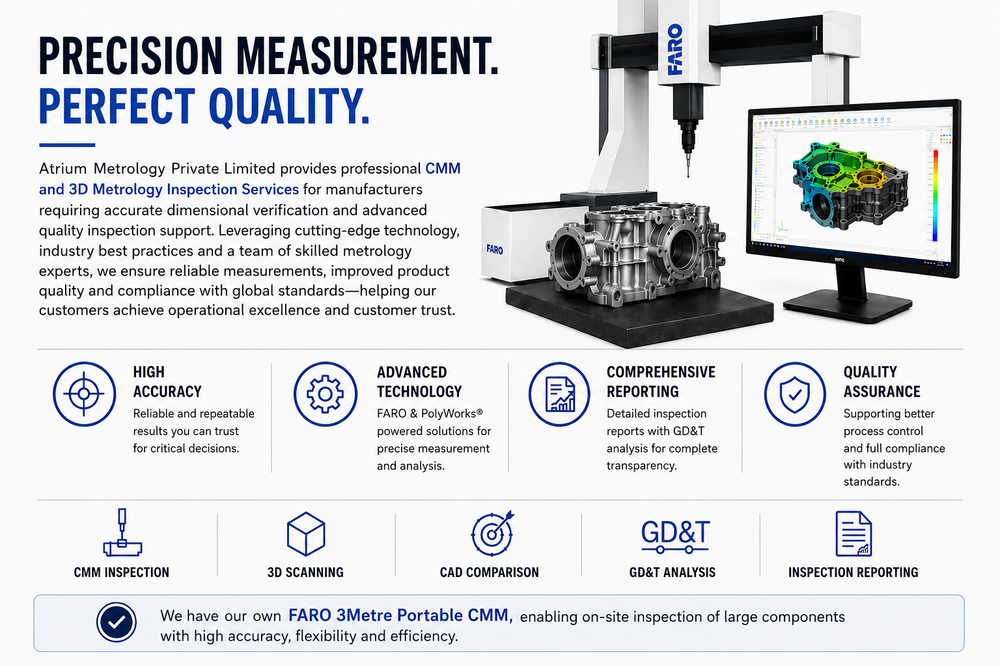
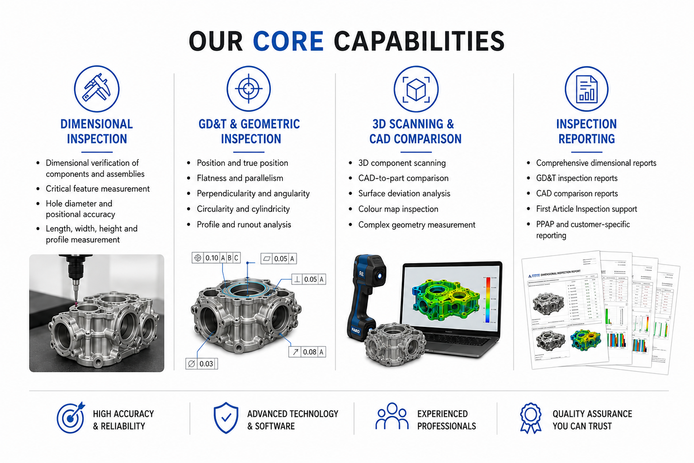
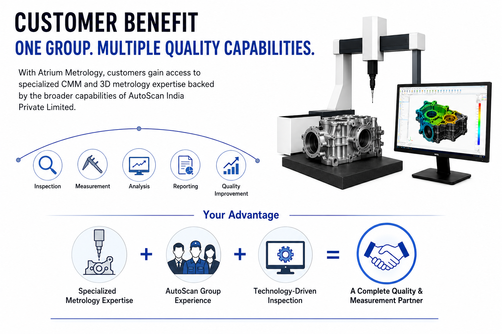
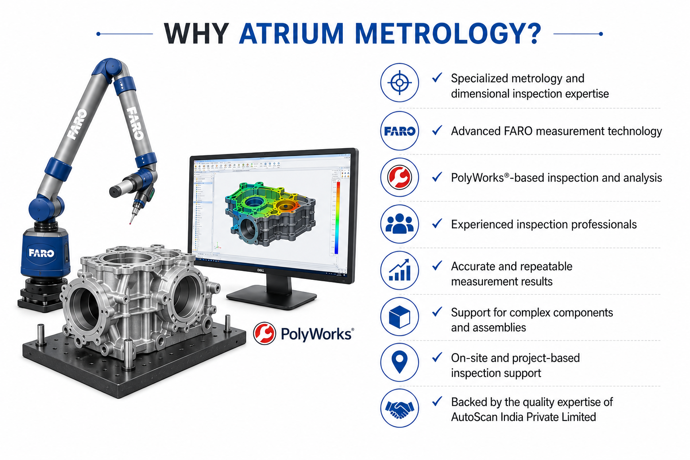

01
Dimensional Inspection
Dimensional verification of components and assemblies, including critical features and positional accuracy.
Atrium Metrology Private Limited provides professional CMM and 3D metrology inspection services, combining advanced measurement technology with experienced quality and metrology professionals.


Atrium Metrology Private Limited has been established as a specialized metrology and dimensional inspection company, building on the quality inspection expertise and industry experience of AutoScan India Private Limited.
The company enables customers to access specialized, technology-driven measurement and metrology solutions alongside existing inspection and quality services.
Practical measurement solutions for critical components, assemblies and manufacturing applications.
Dimensional verification of components and assemblies, including critical features and positional accuracy.
Position, flatness, parallelism, perpendicularity, circularity, cylindricity and profile/runout analysis.
3D component scanning, CAD-to-part comparison, surface deviation and colour-map inspection.
Dimensional, GD&T, CAD comparison and customer-specific inspection reports with clear results.
Accurate coordinate measurement for detailed dimensional verification and quality validation.
First Article Inspection support and customer-specific documentation for quality validation programs.
Measurement support for complex components and assemblies across manufacturing applications.
Portable measurement capability for large components where on-site inspection provides flexibility and efficiency.
Our approach connects inspection with analysis, reporting and quality improvement.

End-to-end measurement capabilities covering dimensional verification, geometric inspection, 3D comparison and comprehensive reporting.

Customers gain specialized metrology expertise backed by the broader capabilities and industry experience of AutoScan India Private Limited.
Modern measurement hardware and inspection software support accurate, repeatable and traceable results.
Advanced FARO measurement technology for precision inspection applications, including portable measurement for large components.
FARO 3Metre Portable CMMPolyWorks®-based inspection and analysis for measurement, CAD comparison, surface deviation and reporting workflows.
Inspection & AnalysisMetrology capabilities supported by practical industry experience in manufacturing and engineering environments.

Let's discuss your CMM, 3D metrology or dimensional inspection requirement.
Our Business Development Team is ready to assist you.
Vittala Nitin Rao
07720060987
marketing@atriummetrology.com
n.rao@autoscan-india.com